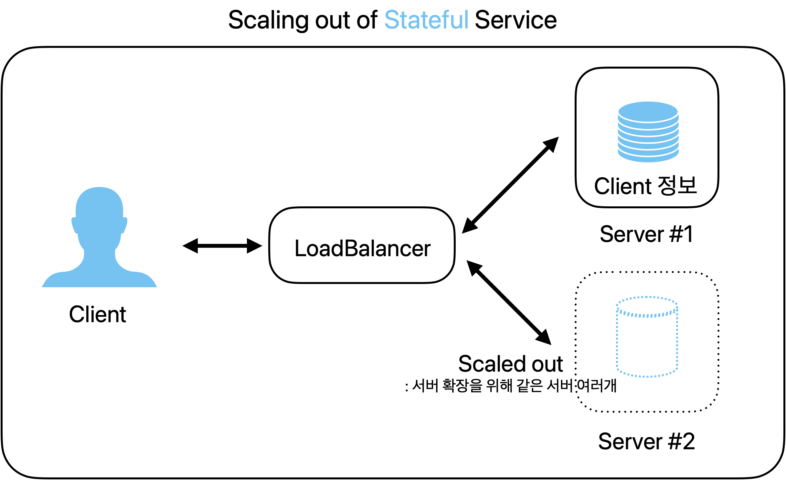
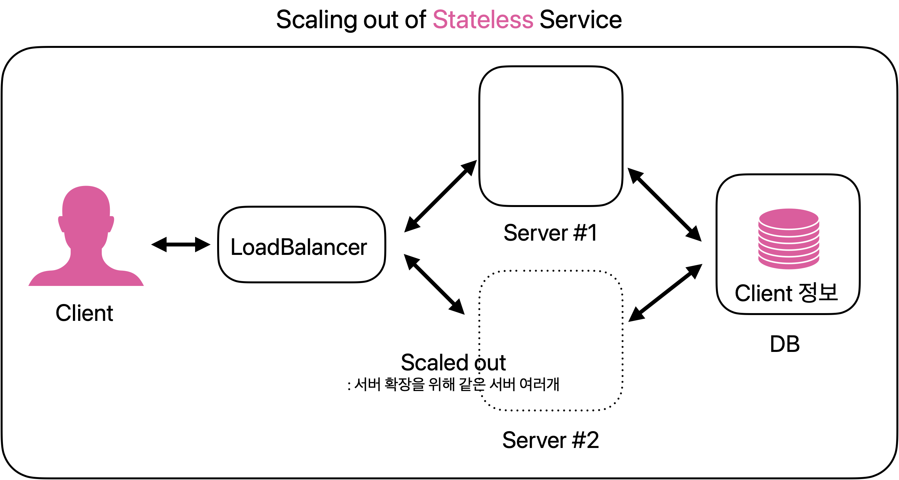

RESTfulAPI
API란?
응용 프로그램에서 사용할 수 있도록, 운영 체제나 프로그래밍 언어가 제공하는 기능을 제어할 수 있게 만든 인터페이스를 뜻한다. 프로그램들이 서로 상호작용하는 것을 도와주는 매개체 = 점원
손님(프로그램)이 주문할 수 있게 메뉴(명령 목록)를 정리하고, 주문(명령)을 받으면 요리사(응용프로그램)와 상호작용하여 요청된 메뉴(명령에 대한 값)를 전달하는 과정
API의 역할은? 1. API는 서버와 데이터베이스에 대한 출입구 역할을 한다. : 데이터베이스에는 소중한 정보들이 저장되는데요. 모든 사람들이 이 데이터베이스에 접근할 수 있으면 안 되겠지요. API는 이를 방지하기 위해 여러분이 가진 서버와 데이터베이스에 대한 출입구 역할을 하며, 허용된 사람들에게만 접근성을 부여해줍니다.
-
API는 애플리케이션과 기기가 원활하게 통신할 수 있도록 한다. : 여기서 애플리케이션이란 우리가 흔히 알고 있는 스마트폰 어플이나 프로그램을 말합니다. API는 애플리케이션과 기기가 데이터를 원활히 주고받을 수 있도록 돕는 역할을 합니다.
-
API는 모든 접속을 표준화한다. API는 모든 접속을 표준화하기 때문에 기계/ 운영체제 등과 상관없이 누구나 동일한 액세스를 얻을 수 있습니다. 쉽게 말해, API는 범용 플러그처럼 작동한다고 볼 수 있습니다.
1) private API - 내부 API - 회사 개발자가 자체 제품과 서비스를 개선하기 위해 내부적으로 발행합니다. - 제 3자에게 노출되지 않습니다.
2) public API - 개방형 API로, 모두에게 공개됩니다. 누구나 제한 없이 API를 사용할 수 있다. - 접속하는 대상에 대한 제약이 없는 경우를 OpenAPI 라고 한다. - 영화진흥위원회 API, 공공데이터, Kakao Developers(카카오 로그인)
3) partner API - 기업이 데이터 공유에 동의하는 특정인들만 사용할 수 있다. - 비즈니스 관계에서 사용되는 편이며, 종종 파트너 회사 간에 소프트웨어를 통합하기 위해 사용된다.
REST란?(구성 요소)
1. 자원(RESOURCE)
- REST는 자원에 접근할 때 URI(Uniform Resource Identifier)를 이용
- URI는 자원의 위치를 나타내는 식별자
- DB 안에 있는 데이터
- ex) 유저 , 주문 등
- 이미지, 문서
- 리소스명은 동사보다는 명사를 사용해야 한다. 행위에 대한 표현X
- 예시1)URI: /blog/posts/678
- 블로그 포스트에 대한 자원
- 예시2) URI: /weather/today?city=Seoul
- 서울의 오늘 날씨 정보에 대한 자원
2. 행위(Verb) - HTTP Method
- HTTP 프로토콜의 Method를 사용하여 원하는 자원에 대한 조작 요청
- POST : 생성 [Create] - 예> HTTP POST, http://bookseller/books -> 책 항목을 생성한다.
- GET : 조회 [Select, Read] - 예> HTTP GET, http://bookseller/books -> 책 항목을 모두 조회한다.
- PUT : 업데이트 [Update] - 예> HTTP PUT, http://bookseller/books -> 해당 책 항목에 정보를 업데이트 한다.
- DELETE : 삭제 [Delete] - 예> HTTP DELETE, http://bookseller/books -> 해당 책 항목들을 삭제 한다.
3. 표현(Representations)
- Client와 Server가 데이터를 주고받는 형태
- JSON, XML, TEXT, RSS등
🚀 정리
REST의 구체적인 개념은 클라이언트와 서버사이에서, HTTP URL을 통해 자원을 명시하고,
HTTP Method(POST, GET, DELETE, PUT 등)를 통해 해당 자원에 대한 조작을 요청하고,
이에 대한 응답을 받는 것을 의미한다.
Rest의 기본 원칙 6가지
1. 클라이언트-서버 모델
- 클라이언트와 서버의 역할을 분리하여 유지보수가 용이함
- REST 서버는 API 제공, 클라이언트는 사용자 인증이나 컨텍스트(세션, 로그인 정보)등을 직접 관리하는 구조
- 서버의 기능 개선이 클라이언트에 영향을 미치지 않고, 클라이언트 인터페이스 개선이 서버에 영향을 주지 않는다.
- 서로간 의존성 줄어든다.
2. 무상태(Stateless)
- 서버가 클라이언트의 상태(세션정보 등)를 저장하지 않는다.
- 필요에 따라 외부DB에 저장한다.
- 서버의 처리가 단순화 되어, 확장성이 증가한다.
- 서버는 단순히 클라이언트의 요청에 대한 응답을 보내는 역할만하며, 세션관리는 클라이언트에게 책임이 있다.
- 모든 클라이언트 요청은 서버가 해당 요청을 이해하고 처리하는 데 필요한 모든 정보를 포함해야 한다. stateful의 경우 세션 정보가 scaled out된 server#2에 저장되어 있지 않다.  stateless의 경우 서버는 클라이언트 세션정보를 관리 하지 않으므로 고려하지 않아도 된다. 
❓ 그럼 로그인 정보를 저장하는 방법인 쿠키,세션에서 세션 정보를 Redis와 같은데 따로 저장하면 stateless인가..?
3. 캐시 가능(Cacheable)
- REST는 웹 표준인 HTTP를 그대로 사용하기 때문에, 웹에서 사용하는 기존 인프라를 그대로 사용할 수 있다. 따라서 HTTP가 가진 캐싱 기능을 적용할 수 있다.
- 클라이언트가 응답을 캐시하여 재사용함으로써 효율성을 높이고, 서버의 부담을 줄인다.
- 캐싱 처리는 보통 GET 요청에서 처리된다.
- Last-Modified태그, E-Tag을 통해 캐싱 구현
- 대량의 요청을 효율적으로 처리 가능
4. 인터페이스 일관성 (Uniform Interface)
- URI로 지정한 리소스에 대한 조작을 통일되고 한정적인 인터페이스로 수행하는 아키텍처 스타일
- HTTP 표준 프로토콜에 따르는 모든 플랫폼에서 사용이 가능하다. 따라서 특정 언어나 기술에 종속되지 않는다.
5. 계층형 구조 (Layered System)
- REST 서버는 다중 계층으로 구성될 수 있으며 보안, 로드 밸런싱, 암호화 계층을 추가해 구조상의 유연성을 둘 수 있고 PROXY, 게이트웨이 같은 네트워크 기반의 중간매체를 사용할 수 있게 합니다.
6. 자체 표현 구조 (Self-descriptiveness)
- REST API 메시지만 보고도 이를 쉽게 이해 할 수 있는 자체 표현 구조로 되어 있다.
RESTful API란?
- REST의 특징을 기반으로 서비스 API를 구현한 것
- URI 형식으로 HTTP 메서드(GET, POST, PUT, DELETE)를 요청해 자원을 조회, 생성, 수정, 삭제할 수 있는 것
- ⭐️ 각 요청이 어떤 동작이나 정보를 위한 것인지를 그 요청의 모습 자체로 추론이 가능한 것
REST API의 설계 규칙
-
URI는 명사를 사용한다.(리소스명은 동사가 아닌 명사를 사용해야 한다.)
1-1. 아래와 같은 동사를 사용하지 말 것/getAllUsers
/getUserById
/createNewUser
/updateUser
/deleteUser -
슬래시( / )로 계층 관계를 표현한다.
- URI 마지막 문자로 슬래시 ( / )를 포함하지 않는다.
- 밑줄( _ )을 사용하지 않고, 하이픈( - )을 사용한다.
- URI는 소문자로만 구성한다.
- 파일확장자는 URI에 포함하지 않는다.
Ex) http://hyehyehey.github.io/restapi/7/photo.jpg (X) - HTTP 응답 상태 코드 사용
-
클라이언트는 해당 요청에 대한 실패, 처리완료 또는 잘못된 요청 등에 대한 피드백을 받아야 한다.
상태 코드 설명 200 클라이언트의 요청을 정상적으로 수행함. 201 클라이언트가 어떠한 리소스 생성을 요청하고, 해당 리소스가 성공적으로 생성됨 (POST를 통한 리소스 생성 작업 시 사용). 301 클라이언트가 요청한 리소스에 대한 URI가 변경되었을 때 사용하는 응답 코드.
(응답 시 Location header에 변경된 URI를 적어 줘야 함).400 클라이언트의 요청이 부적절할 경우 사용하는 응답 코드. 401 클라이언트가 인증되지 않은 상태에서 보호된 리소스를 요청했을 때 사용하는 응답 코드.
(로그인하지 않은 유저가 로그인 했을 때 요청 가능한 리소스를 요청했을 때 사용).403 유저 인증 상태와 관계 없이 응답하고 싶지 않은 리소스를 클라이언트가 요청했을 때 사용하는 응답 코드.
(403보다는 400이나 404를 사용할 것을 권고. 403 자체가 리소스가 존재한다는 뜻).405 클라이언트가 요청한 리소스에서는 사용 불가능한 Method를 이용했을 경우 사용하는 응답 코드. 500 서버에 문제가 있을 경우 사용하는 응답 코드.
{kind=link}
REST의 장단점
장점
- 확장성 : 서버와 클라이언트 사이의 인터페이스가 명확하여 서로간의 의존성이 낮음
- 유연성
- 독립성
단점
- HTTP 프로토콜에 의존
- URI 설계가 복잡할 수 있음
- 상태 정보가 클라이언트 서버 간에 전송될 수 있음
- 필요한 문서화와 테스트 등의 추가 작업 필요
👀 REST API와 RESTful API의 차이는 뭘까?
RESTful은 REST의 설계 규칙을 잘 지켜서 설계된 API를 RESTful한 API라고 합니다. 즉, REST의 원리를 잘 따르는 시스템을 RESTful이란 용어로 지칭됩니다.
| 구분 | API | RESTful API |
|---|---|---|
| 제약 조건 | 제약 조건이 없거나 제한적 | 아키텍처의 제약 조건을 모두 따르도록 설계 |
| 호환성 및 이식성 | 다양한 프로그래밍 언어나 플랫폼에서 호환성 있도록 개발 | 표준 HTTP 메소드 사용, 인터페이스 일관성, 다양한 클라이언트에서 쉽게 사용 |
| 보안성과 안정성 | 제한적인 보안성과 안정성 | 클라이언트-서버 구조, 무상태성, 캐시, 계층화, 유니폼 인터페이스 등 제약 조건으로 보안성 높음 |
📌 결론: URI는 정보의 자원만 표현해야 하며, 자원의 행위는 HTTP Method에 명시한다!
REST 아키텍처 스타일
REST API 설계 예시
@PostMapping("/review")
@ResponseBody
public ResponseEntity<BasicResponse> createReview(ReviewRequestVo reviewRequestVo){
// 리뷰 등록 로직
}
@DeleteMapping("/review")
@ResponseBody
public ResponseEntity<BasicResponse> deleteReview(int lfReviewId){
int result = standardService.deleteReview(lfReviewId);
// 리뷰삭제 로직
}